Controls reference for the prepared 0.1.6-beta1 package. Images are native/software captures, not photographs of every physical test.
X0X EXTENDED EDITION · LOCAL CONTROLS REVIEW
New local candidate: block durations now reach 32 bars, and 303 A/B can use Scale adherence. Review and validation are local; no device has been flashed.
These captures come from the candidate's actual firmware UI running in the host simulator. They are not photographs of an installed build. Nothing on this page flashes or changes your FM-1.
Groove A → independent four-bar bridge → Groove B
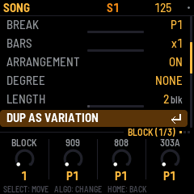
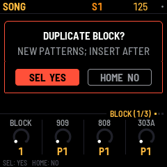
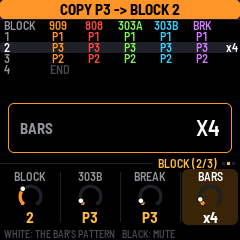
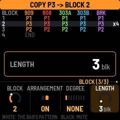
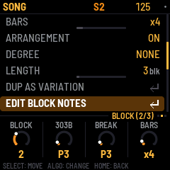
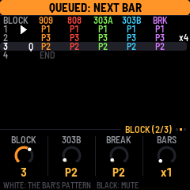
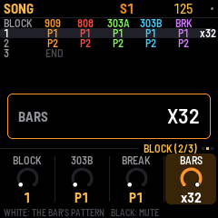
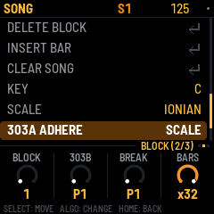
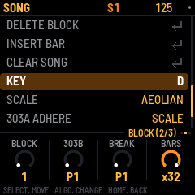
A 16-step kick and a 5-step snare at straight sixteenths align again after 80 steps, or five bars. A four-bar block still ends after four bars; it does not wait for every lane to align. Unchanged instrument pattern numbers continue their phase across block boundaries. A changed instrument pattern number restarts that instrument's lanes. A long block repeats the stored patterns; it does not add 32 bars of unique note storage.
SCALE applies semitone transposition first, then selects the nearest note allowed by the shared key and scale and the instrument's existing note bounds. Equal distances choose the lower note. In C Ionian/major, C + 1 semitone resolves to C; C + 2 to D; C + 3 to D. This is semitone transpose with a final scale correction, not a new scale-degree transpose knob.
Scale adherence works with degree NONE and with ARRANGEMENT OFF. It covers sequenced notes and transposition, keyboard preview and incoming MIDI notes. OFF retains chromatic note output. ROOT and CHORD retain their existing chord-follow behavior when arrangement and chord degree are active. Stored source notes, generator settings, rhythm, accent and slide settings stay unchanged; slides retain their intentional continuous pitch movement between legal note targets. A range containing no legal note produces silence rather than an illegal pitch.
Existing projects retain their previous 1–8 bar durations. Projects using 9–32 bars or Scale mode require this candidate or a compatible newer version; older firmware rejects those settings. Keep a pre-change project backup for rollback. The packed model size and permanent RAM buffers remain unchanged.
Existing coarse MIDI CC mappings are preserved: the duration CC still selects 1–8 bars and the follow-mode CC still selects OFF/ROOT/CHORD. Use native/browser controls or the existing exact-value MIDI transactions for 9–32 bars and SCALE.
Visible Undo: in the SONG controls list, scroll below 303B ADHERE to UNDO and press SEL. It uses the same history as HOME + REC; it undoes the latest recorded edit, not necessarily a deletion. Structural Undo requires stopped playback. HOME + PLAY remains Redo.
Stop playback. Open SONG with HOME twice, choose a row with the BLOCK selector, press SELECT and choose DELETE BLOCK. Confirm with SEL or cancel with HOME. Later rows close the gap; the nearest remaining row becomes selected.
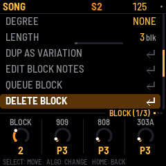
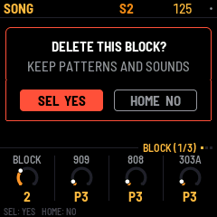
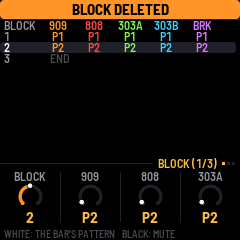
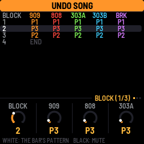
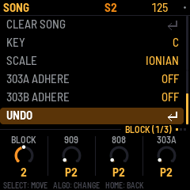
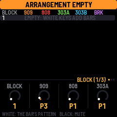
Proposed controls, not implemented in this deletion increment: sound presets remain shared. Per-block sound-preset snapshots are deferred in favor of the sequence editing you requested.
| Scope | Proposed operation |
|---|---|
| One drum sound, such as the 909 snare | Copy its sequence lane and paste to the same sound in another sequence, leaving every other drum unchanged. Offer randomisation for that selected sound only. |
| One instrument pattern | Copy the entire 909 or 808 kit pattern, a 303 line or the BREAK sequence. |
| Whole block sequence | Copy all five instrument patterns together. DUP AS VARIATION already provides an independent new variation after the selected block. |
| Paste destination | Choose a new independent sequence or replace an existing sequence. Replacement must show the destination and warn about other blocks sharing it, with confirmation and Undo. |
Lane copying should carry that sound's notes and supported timing and probability data. Kit-wide accent and swing must be handled explicitly so pasting one snare cannot silently change the kick or hats. Randomising one lane should keep its sound settings and every other lane intact. The exact randomisation choices remain for controls review.
Choose EDIT BLOCK NOTES from the SONG list. It selects that block's assigned part patterns and returns to HOME. Choose 909, 808, 303A, 303B or BREAK and edit its sequence using the existing part controls. The duplicated patterns preserve the original groove's notes. Reassigning a part to an existing shared pattern deliberately links its notes again.
For example, alter the copy's snare and hat steps into a fill, or change its part mutes. In arrangement mode, the first five black keys on SONG toggle the selected block's five part mutes. Pattern assignments are available on the SONG knobs.
When ARRANGEMENT is ON, playback follows it even while you edit a part. To audition patterns outside the arrangement, stop and switch ARRANGEMENT OFF.
| Section / function | Controls | When |
|---|---|---|
| Open SONG | HOME twice from the main part view | Navigation |
| Select block | SONG: BLOCK selector | Chooses editing/start row |
| Copy independent variation | SELECT list → DUP AS VARIATION → SEL; SEL confirms, HOME cancels | Stopped; free pattern/motion capacity required |
| Change block duration | Second SONG page: KNOB4 BARS | ARRANGEMENT ON; 1–32 musical bars |
| Edit copied notes | SELECT list → EDIT BLOCK NOTES → SEL; choose instrument at HOME | Sound settings remain shared |
| Delete block | SELECT list → DELETE BLOCK → SEL; SEL confirms, HOME cancels | Stopped; patterns and sounds retained |
| Undo latest edit | SONG SELECT list → UNDO → SEL, or hold HOME and press REC | Structural history requires stopped playback |
| Redo | Hold HOME and press PLAY | Structural history requires stopped playback |
| Queue block | SELECT list → QUEUE BLOCK → SEL | Playing: next musical bar; stopped: choose starting row |
| Block part mutes | First five black keys on SONG | ARRANGEMENT ON |
| Control | Behavior |
|---|---|
| PLAY from SONG | Starts from the selected row and follows the arrangement. The arrangement wraps to its beginning after its last active block. |
| QUEUE BLOCK while stopped | Selects the starting block. |
| QUEUE BLOCK while playing | Jumps at the next musical bar, even if the current block has more bars remaining. A Q marks the queued row. |
| Duplicate / structural Undo / structural Redo | Require stopped transport. A pending Start or Continue also counts as busy. |
This candidate is based on released 0.1.5-beta1. The separate autosave candidate has not been combined into it. Check the new test receipt for final validation; the prior deletion receipt remains preserved.